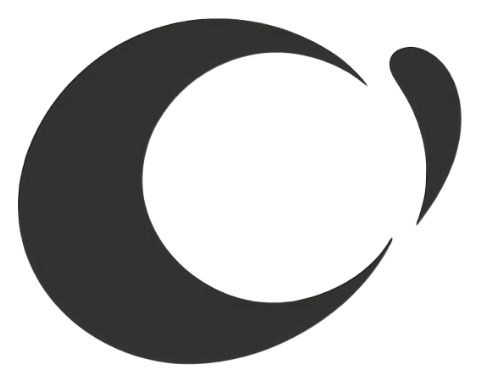

[ PurityLens — scan result UI ]product screenshot · 4:3 · drop here
AI skincare-ingredient safety scanner — photo → OCR → verdict, before anything touches it.
- Flutter
- AI OCR
- Cloudflare Workers
- D1
Crealize — Design Tokens & Atoms
MATERIALIZE design language · Japanese-Swiss editorial · v1 · 2026

Crealize LLC Crealizemark: fixed asset — do not redraw · ink on paper · nav 21px / footer 26px
wordmark 標準字: “Crealize” — capital C, rest lowercase, never all-caps · Bricolage Grotesque 600 · tracking −0.015em · gap to mark ≈ 0.5× mark height · clearspace ≥ cap-height of C on all sides
section padding: clamp(80–220px vertical) · gutter: clamp(20–88px) · max-width 1440
cards & shots: r-2 · form panel: r-3 · buttons & chips: pill · everything else: sharp
language switcher: globe icon → menu (English / 日本語 / 繁體中文) · active = orange dot
AI skincare-ingredient safety scanner — photo → OCR → verdict, before anything touches it.
variants: featured (2-col, staggered, 4 flagships) · the index — registry row: mono №/name/名/category/status/stack, fuzzy "$ filter:" prompt, stable numbering under filter · click anywhere → materialize modal (點→線→面, ≤600ms)
alt-text plan: product screenshots → “{Product} — {screen} UI” · brand mark → “Crealize mark” · decorative canvas/ornaments → aria-hidden · all copy stays real text, never baked into images
One motion language: condensation. Elements arrive by de-blurring and settling (blur 10→0 · y 18→0 · opacity 0→1 · cubic-bezier(.22,1,.36,1) · 1100ms). Scatter→assemble is reserved for the hero. No springs, no bounce. Reduced-motion: content renders in final state.